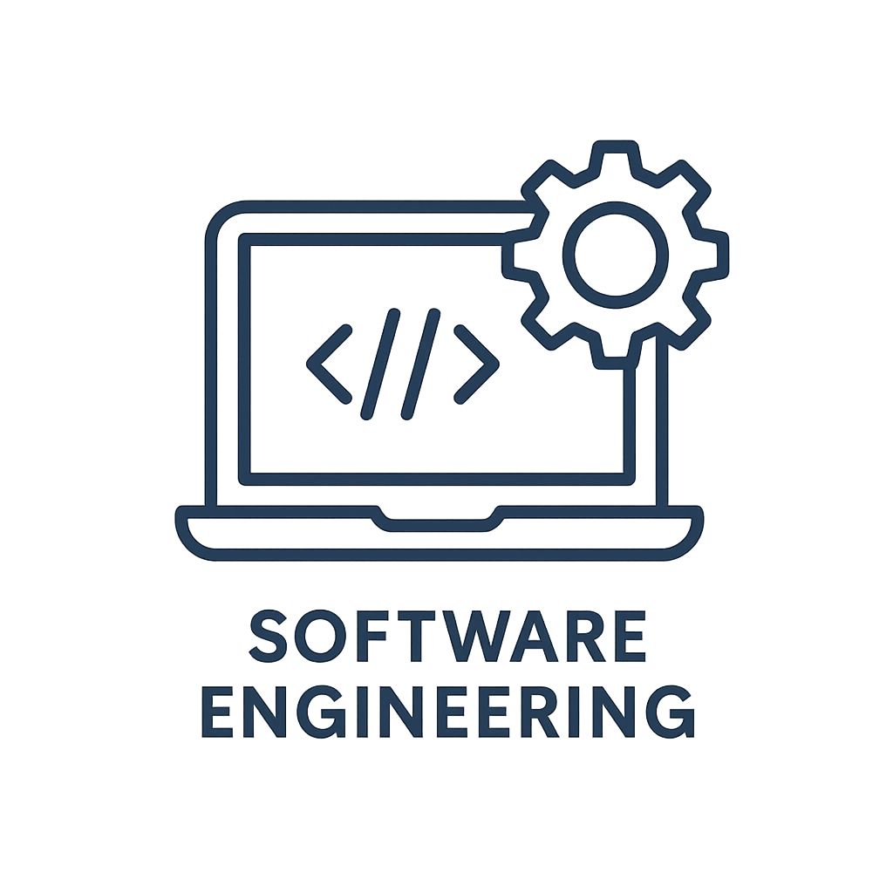

1. Software Development Life Cycle (SDLC)
The SDLC consists of:
-
Planning: Define scope, budget, and schedule.
-
Requirements: Gather functional and
non‐functional needs.
-
Design: High‐level and detailed design
specifications.
-
Implementation: Coding, code reviews, and version
control.
-
Testing: Unit, integration, system, and
acceptance tests.
-
Maintenance: Patches, updates, and continuous
improvement.

2. Methodologies
3. Quality Assurance & DevOps
Modern pipelines include:
- Continuous Integration (CI) with automated builds.
- Continuous Delivery (CD) for rapid, reliable deployments.
- Infrastructure as Code (IaC) to manage provisioning.
Sources